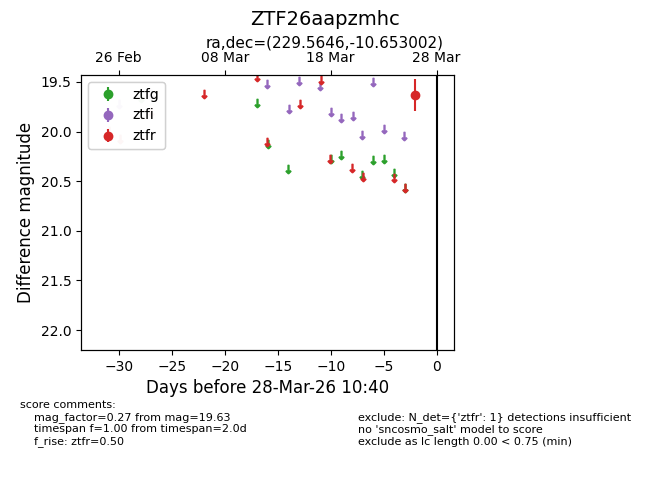
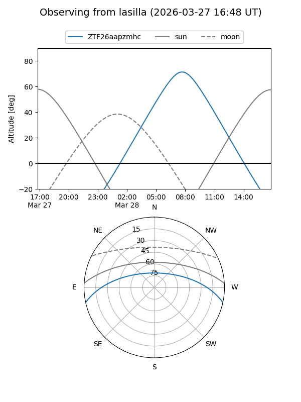
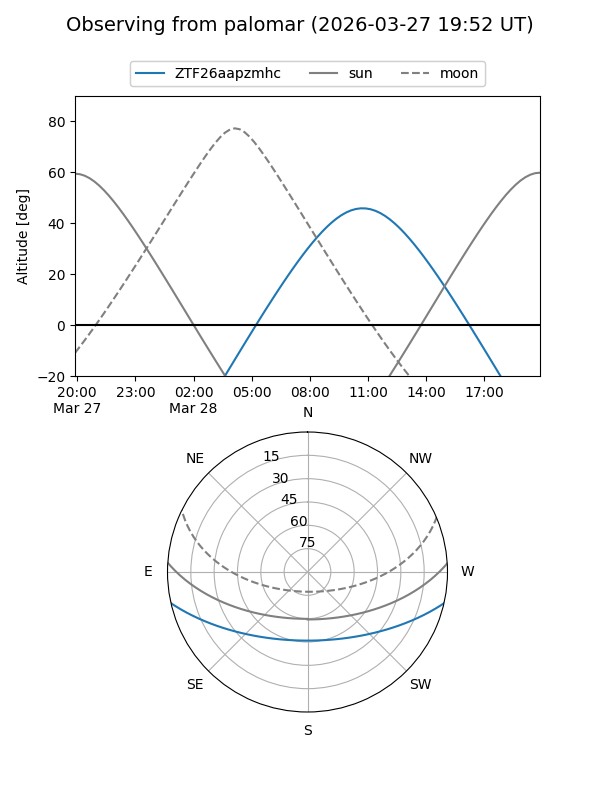

ZTF26aapzmhc
Target ZTF26aapzmhc at 2026-03-28 10:43
Aliases and brokers:
FINK: link
Lasair: link
ALeRCE: link
alt names
ZTF26aapzmhc (ztf,fink_ztf)
Coordinates:
equatorial (ra, dec) = 229.5646,-10.65300
equatorial (HMS+DMS) = 15:18:15.49,-10:39:10.81
galactic (l, b) = (351.2077,+38.09247)
Flags:
Photometry:
last ztfr=19.63
1 ztfr detections
Lightcurve

Visibility


Additional plots